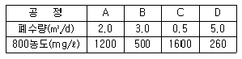
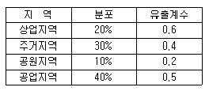
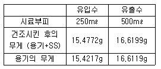
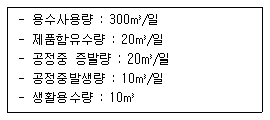
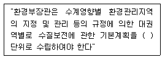

수질환경기사 (2004-08-08 기출문제)
1과목: 수질오염개론
1. 해수의 화학적 성질에 관한 설명으로 틀린 것은?
- 염분은 통상 천분율로 표시한다.
- 해수의 주요 성분 농도비는 항상 일정하다.
- 해수는 강전해질로서 1L 당 35g의 염분을 함유한다.
- 해수내 질소 중 35% 정도는 NO2-, NO3-N 형태이다.
(정답률: 67%)

2. 하천의 생태변화과정 중 '회복지대'에 관한 설명과 가장 거리가 먼 것은? (단, Whipple의 4지대 구분 기준)
- 혐기성세균이 호기성세균으로 교체되며 곰팡이류가 사라진다.
- 용존산소가 포화될 정도로 증가한다.
- 조류가 많이 발생하며 조개류나 벌레의 유충이 번식한다.
- 아질산염이나 질산염의 농도가 증가한다.
(정답률: 45%)
3. 완전혼합형 반응조에 관한 설명과 가장 거리가 먼 것은?
- 분산수(dispersion NO)는 무한대에 가깝다.
- Morrill지수의 값이 클수록 이상적인 완전혼합형에 가깝다.
- 완전혼합흐름(circuiting)으로 dead space가 형성되지 않는다.
- 반응조를 빠져 나오는 입자는 통계학적인 농도로 유출된다.
(정답률: 37%)
4. C2H6 2g이 완전산화하는데 필요한 이론적 산소량은?
- 6.73 g
- 7.47 g
- 8.27 g
- 9.94 g
(정답률: 64%)
5. 해수를 화학적으로 분석하면 7가지의 성분이 주종을 이루고 있다. 다음중 여기에 포함되지 않는 이온성분은?
- SO4-2
- K+
- HCO3-
- Fe+2
(정답률: 알수없음)
6. 다음 중 녹조류에 대한 설명으로 가장 알맞는 것은?
- 고등조류와 하등조류 두개의 군이 있고 철 및 유황 분해에 중요한 역활을 하며, Crenothrix 가 대표적이다.
- 섬유상이나 군락상의 단세포로 나타난다.
- 드물게 군락을 이루며, 전도현상으로 봄, 가을에 순간적인 급성장을 보인다.
- 단세포와 다세포가 있으며 비운동성이 있는가 하면 Swimming flagella를 갖춘 것도 있다.
(정답률: 44%)
7. 어떤 폐수의 BOD5가 300mg/ℓ , COD가 400mg/ℓ 이었다. 폐수의 난분해성 COD(NBDCOD)는? (단, 탈산소계수, k1 = 0.01hr-1이다. 상용대수기준BDCOD=BODU )
- 60mg/ℓ
- 70mg/ℓ
- 80mg/ℓ
- 90mg/ℓ
(정답률: 47%)
8. 어떤 하천수의 단위시간당 산소전달계수(KLa)를 측정코자 1ℓ 의 하천수중 용존산소(DO)농도를 측정하니 8mg/ℓ 였다. 이 때 하천수 1ℓ 에 용해되어 있는 용존산소의 농도를 완전히 제거하기 위하여 투입하는 무수아황산나트륨(Na2SO3)의 이론적 농도는? (단, 원자량은 Na: 23)
- 36mg/ℓ
- 63mg/ℓ
- 93mg/ℓ
- 116mg/ℓ
(정답률: 40%)
9. 최종 BOD농도가 200mg/ℓ 인 글루코스(C6H12O6)용액을 호기성 처리할 때 필요한 이론적 인(P)의 농도(mg/ℓ)는? (단, BOD5:N:P＝100:5:1, 탈산소계수(k=0.01hr-1), 상용대수기준)
- 1.87mg/ℓ
- 2.81mg/ℓ
- 3.63mg/ℓ
- 4.41mg/ℓ
(정답률: 73%)
10. 반감기가 2일인 방사성 폐수의 농도가 10mg/L 라면 감소속도정수(day-1)는? (단, 1차 반응속도 기준)
- 0.347
- 0.436
- 0.512
- 0.643
(정답률: 46%)
11. 원료 5ton/d을 사용하는 공장의 공정별 폐수량 및 BOD농도는 아래 표와 같다. 원료 1ton당 BOD인구당량은? (단, BOD 인구당량은 40g/인· 일로 가정)

- 25인
- 30인
- 35인
- 40인
(정답률: 알수없음)
12. 25℃, pH 7, 염소이온 농도가 35.5ppm인 수용액내의 자유염소와 차아염소산의 비율([HOCl]/[Cl2])은? (단, 차아염소산은 해리되지 않으며, Cl2 + H2O ↔ HOCl+ H+ + Cl-, K= 4.5× 10-4 mol/L, 염소원자량: 35.5이다)
- 2.3× 106
- 4.5× 106
- 2.3× 107
- 4.5× 107
(정답률: 42%)
13. 다음은 응집에 관한 내용이다. 틀린 것은?
- 응집제를 가해주는 목적은 콜로이드의 반발력을 감소시키고자 함이며, 콜로이드 입자의 제타전위는 일차전하가 0 이고 이중층이 존재하지 않는 등전점까지 pH를 조정함으로써 감소된다.
- 제타전위는 반대전하의 이온이나 콜로이드를 가해주면 감소된다.
- 반대전하의 2가 이온은 1가 이온보다 적어도 50배, 그리고 3가 이온은 1,000배나 더 효과적이다.
- 친수성 콜로이드의 부착수는 고농도인 염류에 의해 증가되어 염석효과를 일으키며, 염석의 효과도는 음이온보다는 양이온의 성질에 의존한다.
(정답률: 40%)
14. 다음은 수용액상의 전기전도도에 대한 설명이다. 알맞지 않는 것은?
- 수용액의 전기전도도는 수중에 녹아있는 이온의 양과 각 이온의 전기를 운반하는 속도에 지배된다.
- 전기전도도는 수용액의 비저항으로 나타낸다.
- 같은 물질이라도 측정온도가 다르면 전기전도도가 다르다.
- 전하를 띠지 않는 물질은 물에 많이 녹아 있어도 전기전도도에 영향을 주지 않는다.
(정답률: 37%)
15. 다음중 하천을 모형화하기 위한 일반적인 가정조건과 가장 거리가 먼 것은?
- 오염물질의 특성이 항상 보전성이다.
- 오염물질의 농도분포가 하천의 흐름방향으로 이루어진다.
- 유속으로 인한 오염물질의 이동이 매우 크므로 확산에 의한 영향은 무시한다.
- 정상상태이다.
(정답률: 36%)
16. 경도가 CaCO3로서 500㎎/ℓ 이고 Ca+2 가 100㎎/ℓ , Na+이 46㎎/ℓ , Cl- 이 1.3 ㎎/ℓ 인 물에서의 Mg+2의 농도는? (단, 원자량은 Ca: 40, Mg: 24, Na: 23, Cl: 35.5 )
- 30㎎/ℓ
- 60㎎/ℓ
- 120㎎/ℓ
- 240㎎/ℓ
(정답률: 50%)
17. 분뇨 정화조의 희석배율은 통상유입 Cl-농도와 방류수의 희석된 Cl-농도로써 산출될 수 있다. 정화조로 유입된 생분뇨의 BOD가 21500ppm, 염소이온 농도가 5500ppm, 방류수의 염소이온 농도가 200ppm 이라면, 방류수의 BOD농도가 80ppm일 때 정화조의 BOD제거율(%)은?
- 99.6
- 96.9
- 94.4
- 89.8
(정답률: 50%)
18. 0℃에서 DO 4mg/L인 물(액상)의 DO포화도는 몇 %인가? (단, 대기의 화학적 조성 중 O2는 21%, 0℃에서 순수한 물의 용해도는 40mL/L이라 가정한다. 1기압 기준)
- 31.5
- 33.3
- 37.5
- 39.2
(정답률: 55%)
19. Ca(OH)2 200 mg/L 용액의 pH는? (단, Ca(OH)2는 완전 해리한다. Ca원자량:40 )
- 11.63
- 11.73
- 11.83
- 11.93
(정답률: 73%)
20. 지구상의 담수의 존재량을 볼 때 그 양이 가장 큰 형태는?
- 빙하
- 하천수
- 지하수
- 수증기
(정답률: 73%)
2과목: 상하수도계획
21. 정수시설인 배수지에 대한 설명으로 틀린 것은?
- 자연유하식 배수지의 높이는 최소동수압이 확보되는 높이여야 한다.
- 2개 이상의 배수계통으로 된 경우는 각 계통마다 배수지의 유효유량을 결정하여야 한다.
- 배수지의 유효용량은 급수구역의 계획 1일 최대급수량의 8 - 12시간분을 표준으로 한다.
- 배수지의 유효수심은 2 - 4m 범위를 표준으로 한다.
(정답률: 46%)
22. 계획우수량 산정시 고려하는 확률년수는 원칙적으로 얼마인가?
- 5 - 10년
- 10 - 15년
- 15 - 20년
- 20 - 25년
(정답률: 30%)
23. 내경 1000mm의 강관내로 수압 10kg/cm2으로 물이 흐르고 있다. 매설 강관의 최소 두께(mm)는? (단, 관의 허용응력은 1100kg/cm2이다.)
- 2.27mm
- 3.72mm
- 4.54mm
- 5.43mm
(정답률: 17%)
24. 일반적으로 사용되는 하수관거의 형태중 원형관의 장점이라 볼 수 없는 것은 ?
- 공장 제품사용시 이음이 적어져 지하수 침수를 효과적으로 막을 수 있다.
- 역학계산이 간단하다.
- 수리학적으로 유리하다.
- 내경 3m 정도까지 공장 제품을 사용할 수 있어 공기가 단축된다.
(정답률: 29%)
25. 어느 도시의 장래하수량 추정을 위해 인구증가 현황을 조사한 결과 매년 증가율이 5%로 나타났다. 이 도시의 20년후의 추정 인구는? (단, 현재의 인구는 73,000명이다)
- 약 132,000명
- 약 162,000명
- 약 183,000명
- 약 194,000명
(정답률: 40%)
26. 구경 400mm인 모터의 직렬펌프에서 양수량 10m3/min, 규정 전양정 40m, 규정 회전수 2100rpm 일 때 비속도(Ns)는? (단, 일반적인 단위 적용)
- 158
- 209
- 324
- 417
(정답률: 65%)
27. 하수도관을 매설할 때 파야할 도랑의 폭을 폭요소라한다. 매설관의 직경이 0.6m 이라면 폭요소로 가장 알맞은 것은 ?
- 120cm
- 140cm
- 160cm
- 180cm
(정답률: 17%)
28. 토출구의 유속이 4m/sec 이고 계획양수량은 20,000m3/day 일 때, 취수장에서 사용되는 펌프의 흡입관 구경은?
- 0.27m
- 0.64m
- 0.82m
- 0.98m
(정답률: 37%)
29. 상수도에서 적용되는 급속여과지의 여과모래에 관한 설명으로 옳지 않는 것은?
- 모래층 두께는 60-120cm 의 범위로 한다
- 여과모래의 유효경은 0.3-0.45mm 이다
- 여과모래의 최대경은 2mm 이내이다
- 여과모래의 균등계수는 1.7 이하로 한다
(정답률: 39%)
30. 하수관거의 접합방법 중 유수는 원활한 흐름이 되지만 굴착깊이가 증가됨으로 공사비가 증대되고 펌프로 배수하는 지역에서는 양정이 높게 되는 단점이 있는 것은?
- 수면접합
- 관중심접합
- 관저접합
- 관정접합
(정답률: 42%)
31. 하수처리시설인 침사지에 관한 설명으로 틀린 것은?
- 침사지의 평균유속은 0.1 - 0.2m/sec를 표준으로 한다
- 체류시간은 30 - 60초를 표준으로 한다
- 수심은 유효수심에 모래퇴적부의 깊이를 더한 것으로 한다
- 침사지의 저부경사는 보통 1/100 - 2/100로 한다
(정답률: 알수없음)
32. 하수도에 많이 사용되는 펌프형식과 특징에 대한 설명중 틀린 것은?
- 원심펌프는 효율이 높고 적용범위가 넓으며 적은 유량을 가감하는 경우에 소요동력이 적어도 운전에 지장이 없고 공동현상이 잘 발생하지 않는다.
- 스크류펌프는 구조가 간단하고 개방형이며 양정에 제한이 없으나 수중의 협잡물로 인해 폐쇄가 많다.
- 사류펌프는 양정변화에 대하여 수량의 변동이 적고 또 수량변동에 대해 동력의 변화도 적다.
- 축류펌프는 규정양정의 130% 이상이 되면 소음 및 진동이 발생한다.
(정답률: 39%)
33. 지하수 취수시설(복류수포함)인 집수매거에 관한 설명 중 틀린 것은?
- 집수매거의 단면은 원형 또는 장방형으로 한다.
- 집수매거의 방향은 복류수의 흐름과 직각방향으로 한다.
- 집수매거의 매설깊이는 5m가 기준이다.
- 집수공에서의 유입속도가 3m/min 이하가 되어야한다.
(정답률: 28%)
34. 슬러지 가압탈수 설비인 송풍용 공기압축기는 다음의 사항을 고려하여 정한다. 잘못된 항목은?
- 토출공기량은 탈수실용량 1m3당 대기압하에서의 약 2m3/분으로 한다.
- 토출압력은 7kg/cm2 정도로 한다.
- 송풍시간은 악취율을 고려하여 5-10분으로 한다.
- 대수는 예비를 포함해 2대 이상으로 한다.
(정답률: 19%)
35. 하수도계획 목표연도는 대략 몇년 정도를 원칙으로 하는가?
- 10년
- 20년
- 30년
- 40년
(정답률: 60%)
36. 다음은 우수배제계획의 수립중 우수 유출량의 억제에 대한 계획으로 잘못 설명한 것은?
- 우수유출량의 억제방법은 크게 우수저류형, 우수침투형 및 토지이용의 계획적관리로 나눌 수 있다.
- 우수 저류형 시설중 onsite시설은 단지내 저류 및 우수조정지, 우수체수지 등이 있다.
- 우수 침투형은 우수유출총량을 감소시키는 효과로서 침투 지하매설관, 침투성 포장 등이 있다.
- 우수 저류형은 우수 유출 총량은 변하지 않으나 첨두 유출량을 감소시키는 효과가 있다.
(정답률: 25%)
37. 정수처리 방법 중 트리할로메탄(trihalomethane)을 감소 및 제거시킬 수 있는 방법과 가장 거리가 먼 것은?
- 중간염소처리
- 알칼리제처리
- 활성탄처리
- 결합염소처리
(정답률: 24%)
38. 다음 표는 어느 배수지역의 우수량을 산출하기 위해 조사한 지역분포와 유출계수의 결과이다. 이 지역의 전체평균유출계수는?

- 0.46
- 0.41
- 0.36
- 0.30
(정답률: 40%)
39. 콘크리트조의 장방형 수로(폭 2m, 깊이 2.5m)가 있다. 이 수로의 유효수심이 2m인 경우의 평균유속은? (단, Manning공식으로 계산, 동수경사:1/1000, 조도계수:0.017이다.)
- 1.42m/sec
- 1.53m/sec
- 1.73m/sec
- 1.92m/sec
(정답률: 50%)
40. 비속도가 1200 - 2000인 경우에 사용되는 상수도용 펌프형식으로 적절한 것은? (단, 일반적인 단위 적용시)
- 터어빈펌프
- 볼류트펌프
- 축류펌프
- 사류펌프
(정답률: 28%)
3과목: 수질오염방지기술
41. 양이온 교환수지를 이용하여 암모늄이온 12mg/ℓ 를 포함하고 있는 물 3500m3를 처리하고자 한다. 이 교환수지의 교환 능력이 100kg CaCO3/m3이라면 필요한 이론적 수지의 부피는?
- 1.2m3
- 2.9m3
- 3.5m3
- 4.2m3
(정답률: 37%)
42. 고도 수처리에 이용되는 정밀여과 분리막에 관한 내용과 가장 거리가 먼 것은?
- 분리형태: 용해, 확산
- 구동력: 정수압차(0.1 - 1Bar)
- 막형태: 대칭형 다공성막(Pore size 0.1 - 10㎛)
- 적용분야: 전자공업의 초순수 제조, 무균수제조
(정답률: 47%)
43. 폐수내 시안화합물 처리방법인 알칼리 염소법에 관한 설명과 가장 거리가 먼 것은?
- CN의 분해를 위해 유지되는 pH는 10 이상이다.
- 구리, 아연, 카드뮴 착염 및 크롬이온이 혼입되는 경우 분해가 잘 되지 않는다.
- 산화제의 투입량이 적을 경우는 시안화합물이 잔류하거나 염화시안이 발생하게 되므로 산화제는 약간 과잉으로 주입한다.
- 염소처리시 강알칼리성 상태에서 1단계로 염소를 주입하여 시안화합물을 시안산화물로 변환시킨 후 중화하고 2단계로 염소를 재주입하여 N2와 CO2 로 분해시킨다.
(정답률: 16%)
44. 펜톤산화처리방법에 관한 설명으로 틀린 것은?
- 최적 반응 pH는 3 - 4.5 이다.
- pH조정은 반응조에 펜톤시약을 첨가한 후 조절하는 것이 효율적이다.
- 과산화수소수를 과량으로 첨가함으로서 수산화철의 침전율을 향상시킬 수 있다.
- 폐수의 COD는 감소하지만 BOD는 증가할 수 있다.
(정답률: 알수없음)
45. 폐수2000m3/day에서 생성되는 1차슬러지 부피(m3/day)는 ? (단, 1차 탱크 체류시간 4hr, 현탁고형물 제거효율 60%, 폐수중 현탁고형물 함유량 440㎎/L, 발생슬러지 비중: 1.1, 슬러지 함수율 94%, 1차 탱크에서 제거된 현탁 고형물은 전량이 슬러지화 된다고 가정)
- 3.0
- 4.0
- 6.0
- 8.0
(정답률: 알수없음)
46. 냄새 혹은 생물학적 처리불능(NBD)COD를 제거하기 위하여 흡착제로 활성탄(AC)을 사용하였는데 Freundrich등온공식 이 잘 적용되었다. 즉 COD가 56mg/ℓ 인 원수에 활성탄을 20mg/ℓ 주입시켰더니 COD가 16mg/ℓ 로 되었고, 52mg/ℓ 를 주입하여더니 COD가 4mg/ℓ 로 되었다. COD를 9mg/ℓ 로 만들기 위해서는 활성탄을 얼마나 주입시켜야 하는가?
- 31.3mg/ℓ
- 34.6mg/ℓ
- 37.2mg/ℓ
- 39.1mg/ℓ
(정답률: 7%)
47. 농도 5500mg/L인 폭기조 활성 슬러지 1L를 30분간 정치시켰을 때 침강 슬러지의 부피가 45%를 차지하였다. 이 때의 SDI는?
- 1.43
- 1.38
- 1.31
- 1.22
(정답률: 알수없음)
48. BOD 200mg/ℓ 인 폐수가 1200m3/day로 포기조에 유입되고 있다. 포기조의 부피는 400m3, MLSS 농도는 1500mg/ℓ 이다. F/M 비를 0.3kg BOD/kg MLSS.d으로 유지하지면 MLSS농도를 어느정도 증가시켜야 되겠는가?
- 240 mg/ℓ
- 380 mg/ℓ
- 430 mg/ℓ
- 500 mg/ℓ
(정답률: 34%)
49. 하루 유량 5000m3인 폐수를 용량이 1500m3인 활성슬러지폭기조로 처리한다. 이 때 kd=0.08/일, y=0.6 MLSSmg/BODmg, MLSS는 6000mg/L로 유지되고 있고 유입 BOD500mg/L는 활성슬러지공법으로 90% 제거된다면 SRT는?
- 13.7일
- 14.3일
- 15.4일
- 16.1일
(정답률: 32%)
50. 함수율이 90%인 슬러지 겉보기 비중이 1.02이었다. 이 슬러지를 탈수하여 함수율이 65% 슬러지를 얻었다면 탈수된슬러지가 갖는 비중은 얼마인가? (단, 물의 비중은 1.0 으로 한다.)
- 약 1.15
- 약 1.12
- 약 1.07
- 약 1.04
(정답률: 10%)
51. 1일 10,000m3의 폐수를 급속혼화지에서 체류시간 100sec, 평균속도경사(G) 400sec-1로 기계식고속 교반장치를 설치하고자 한다. 이 장치의 필요한 소요동력은 몇 W 인가? (단,수온은 10℃이고,점성계수(μ )는 1.307× 10-3kg/m· s)
- 1210
- 1765
- 2110
- 2419
(정답률: 29%)
52. 일반적인 양이온 교환물질에 있어 가장 일반적인 양이온에 대한 선택성의 순서로 가장 적합한 것은?
- Ba+2 >Pb+2 >Ca+2 >Sr+2 >Ni+2
- Ba+2 >Pb+2 >Ca+2 >Ni+2 >Sr+2
- Ba+2 >Pb+2 >Sr+2 >Ca+2 >Ni+2
- Ba+2 >Pb+2 >Sr+2 >Ni+2 >Ca+2
(정답률: 37%)
53. 다음 중 생물학적 방법을 이용하여 하수내 인과 질소를 동시에 효과적으로 제거할 수 있다고 알려진 공법과 가장 거리가 먼 것은?
- A2/O 공법
- 5단계 Bardenpho 공법
- Phostrip 공법
- SBR 공법
(정답률: 알수없음)
54. 혐기성 처리시 메탄의 최대 수율은? (단, 표준상태 기준)
- 제거 kg COD당 0.25m3 CH4
- 제거 kg COD당 0.30m3 CH4
- 제거 kg COD당 0.35m3 CH4
- 제거 kg COD당 0.40m3 CH4
(정답률: 알수없음)
55. 다음의 슬러지안정화방법 중 슬러지내 중금속(heavy metal)을 제거시켜 줄 수 있는 방법으로 가장 알맞는 것은?
- 석회석 안정화
- 습식 산화법
- 염소 산화법
- 혐기성 소화
(정답률: 38%)
56. 도시 하수 슬러지의 혐기적 소화에 저해되는 유독 물질의 농도(mg/L) 범위로 가장 알맞는 것은?
- Na : 1000 - 4000
- K : 1000 - 2500
- Mg : 900 - 1100
- Ca : 2000 - 6000
(정답률: 10%)
57. 폭이 18m이고 물깊이가 4m인 침사지의 유량이 60m3/min일 때 프루드 수(Froude No)는?
- 1.83×10-7
- 3.46×10-7
- 4.58×10-6
- 7.11×10-6
(정답률: 알수없음)
58. 폐수에 대한 수율계수(Y)가 0.55mgVSS/mgBOD5로 측정되었다. 이 폐수에 대한 BOD 반응속도상수(탈산소계수)가 0.090d-1(밑10)이라면, COD(BODu)기준의 수율계수값은? (단, 폐수내 유기물은 생물학적으로 분해가능)
- 0.36mgVSS/mgCOD
- 0.42mgVSS/mgCOD
- 0.54mgVSS/mgCOD
- 0.76mgVSS/mgCOD
(정답률: 알수없음)
59. 하수내 함유된 유기물질뿐 아니라 영양물질까지 제거 하기 위하여 개발된 A2/O(Anaerobic Anoxic - Oxic)공법에 관한 설명으로 알맞지 않은 것은?
- 인과 질소를 동시에 효과적으로 제거할 수 있다.
- 혐기조(Anaerobic)에서는 인의 방출이 일어난다.
- 폐 sludge내의 인함유량은 일반 슬러지에 비해 2∼3배 낮게 유지될 수 있다.
- 폭기조(Oxic)의 주된 역할은 질산화와 인의 과잉섭취이며 유입유량의 2배정도 비율로 다시 무산소조로 반송시킨다.
(정답률: 37%)
60. 무기수은계 화합물을 함유한 폐수의 처리방법으로 가장 거리가 먼 것은?
- 황화물 침전법
- 활성탄 흡착법
- 산화분해법
- 이온교환법
(정답률: 알수없음)
4과목: 수질오염공정시험기준
61. 흡광 광도 측정에서 입사광의 80%가 흡수되었을 때의 흡광도는?
- 0.9
- 0.7
- 0.5
- 0.3
(정답률: 알수없음)
62. 공정시험방법상 질산성 질소의 측정법이 아닌 것은?
- 이온전극법
- 이온크로마토그래피법
- 부루신법
- 데발다합금 환원증류법
(정답률: 34%)
63. 공정시험방법상 수중의 음이온 계면활성제를 측정하는 방법은?
- 디페닐카르바지드법
- 디메칠글리옥심법
- 페난트로린법
- 메틸렌블루우법
(정답률: 46%)
64. 수질오염공정시험방법상 유리섬유 여지를 사용한 부유물질 시험의 정량범위는 얼마 이상인가?
- 0.1㎎
- 0.5㎎
- 1.0㎎
- 5.0㎎
(정답률: 10%)
65. 다음 이온 크로마토그래피법에 관한 설명 중 틀린 것은?
- 물 시료중 음이온의 정성 및 정량분석에 이용된다.
- 기본구성은 용리액조, 시료주입부, 액송펌프, 분리컬럼, 검출기 및 기록계로 되어있다.
- 시료의 주입량은 보통 50-100㎕ 정도이다.
- 일반적으로 음이온 분석에는 전기화학적 검출기를 사용한다.
(정답률: 53%)
66. 윙클러-아지드화나트륨 변법으로 용존산소를 정량할 때 적정에 사용된 0.01N-Na2S2O3이 1㎖ 소요되었다면 이것은 용존산소 몇 ㎎에 상당하는가?
- 0.8 ㎎
- 0.2 ㎎
- 0.08 ㎎
- 0.02 ㎎
(정답률: 14%)
67. 유도결합 플라스마 발광분석 장치의 조작시 플라스마를 점등 후 약 몇 분간 안정화 시켜야 하는가 ?
- 1분
- 2분
- 3분
- 4분
(정답률: 31%)
68. 용존산소(DO)측정시 시료가 착색, 현탁된 경우에 사용하는 전처리시약은?
- 칼륨명반용액, 암모니아수
- 황산구리, 술퍼민산용액
- 황산, 불화칼륨용액
- 황산제이철용액, 과산화수소
(정답률: 75%)
69. 다음과 같은 분석결과를 이용하여 하수 처리장의 SS 제거 효율은?

- 97%
- 93%
- 89%
- 85%
(정답률: 42%)
70. 다음은 이온 전극법에 대한 내용이다. 잘못된 것은?
- 시료중의 분석대상 이온의 농도에 감응하여 비교전극과 이온전극간에 나타나는 전위차를 이용하여 목적 이온의 농도를 정량하는 방법이다.
- 나트륨이온을 측정할 때는 고체막 이온전극을 사용한다.
- 이온농도의 측정범위는 일반적으로 10-1mol/L ∼10-4mol/L 이다.
- 측정용액의 온도가 10℃ 상승하면 전위구배는 1가 이온이 약 2㎷, 2가 이온이 약 1㎷ 변화한다.
(정답률: 50%)
71. 수은을 원자흡광광도법(환원기화법)으로 측정할 때 시료 중 염화물이온이 다량 함유된 경우에는 산화조작시 유리 염소를 발생시켜 253.7nm에서 흡광도를 나타낸다. 이를 해결하는 방법으로 적절한 것은?
- 염산히드록실아민 용액을 과잉으로 넣어 유리염소를 산화시키고 용기중에 잔류하는 염소는 질소 가스를 통기시켜 추출한다
- 염산히드록실아민 용액을 과잉으로 넣어 유리염소를 환원시키고 용기중에 잔류하는 염소는 질소 가스를 통기시켜 추출한다
- 염화제일주석산 용액을 과잉으로 넣어 유리염소를 산화시키고 용기중에 잔류하는 염소는 질소 가스를 통기시켜 추출한다
- 염화제일주석산 용액을 과잉으로 넣어 유리염소를 환원시키고 용기중에 잔류하는 염소는 질소 가스를 통기시켜 추출한다
(정답률: 24%)
72. 시료의 보존처리방법에 관한 설명 중 틀린 것은?
- 시안화합물 검정용 시료는 수산화나트륨용액을 가하여 pH 12 이상으로 조절, 4℃에서 보관한다.
- 유기인 검정용 시료는 질산을 2mL/L로 가하여 4℃에서 보관한다.
- 6가 크롬 검정용 시료는 4℃에서 보관하며 최대보전 기간은 24시간이다.
- PCB 검정용시료는 염산으로 PH 5-9로 조절하여 4℃에서 보관한다.
(정답률: 27%)
73. 염소이온 측정방법중 질산은 적정법의 정량범위는 몇 mg/L 이상인가?
- 5.0
- 3.0
- 0.7
- 0.5
(정답률: 20%)
74. 4각 위어에 의하여 유량을 측정하려고 한다. 위어의 수두0.5m, 수로절단의 폭이 4m이면 유량(m3/분)은? (단, 유량계수는 1.6 이다.)
- 0.52
- 1.15
- 2.26
- 4.82
(정답률: 46%)
75. [시료의 양은 30분간 가열반응후에 0.025N 과망간산칼륨 용액이 처음 첨가한 양의 ( )가 남도록 채취한다] ( )안에 가장 알맞은 범위는? (단, 산성 100℃에서 과망간산칼륨에 의한 시험법 기준)
- 30∼50%
- 40∼60%
- 50∼70%
- 60∼80%
(정답률: 8%)
76. 공정시험방법상 원자흡광광도법으로 측정하지 않는 항목은?
- 불소
- 크롬
- 6가크롬
- 아연
(정답률: 25%)
77. 클로로필-a(chlorophyll-a)를 흡광광도법을 이용하여 측정하려 한다. 시험방법으로 알맞지 않은 것은?
- 시료적당량(100-2000mL)를 유리섬유여지로 여과한다.
- 여과한 시료에 아세톤(1+9) 적당량(50-100mL)을 넣어 마쇄한다.
- 마쇄한 시료를 마개있는 원심분리관에 넣고 밀봉하여 4℃ 어두운 곳에서 하룻밤 방치후 20분간 500g의 원심력으로 원심분리한다.
- 원심분리한 후 상등액을 검액으로 663㎚, 645㎚, 630㎚, 750㎚에서 흡광도를 측정한다.
(정답률: 16%)
78. 노말헥산 추출물질에 대한 설명으로 옳지 않은 것은?
- 정량범위는 2 - 200mg 이다.
- 시료는 유리병을 사용하여야 하며 채취한 시료 전량을 사용하여야 한다.
- 표준편차율은 20 - 5% 이다.
- 광유류양을 시험하는 경우는 활성규석칼륨(플로리실) 칼럼을 사용한다.
(정답률: 19%)
79. BOD치에 대한 사전 경험이 없을 때에는 검액을 희석하여 조제하는데 기준으로 알맞은 것은 ?
- 강한 공장폐수 : 0.01 - 0.1%
- 오염된 하천수 : 15 - 50%
- 처리하여 방류된 공장폐수 : 25 - 70%
- 처리하지 않은 공장폐수 : 1 - 5%
(정답률: 46%)
80. 알킬수은의 정량을 가스크로마토그라피법에 의하여 측정할 때 가장 일반적으로 사용되는 검출기는 ?
- TCD 검출기
- FID 검출기
- FPD 검출기
- ECD 검출기
(정답률: 47%)
5과목: 수질환경관계법규
81. 다음의 사업장에서 발생하는 폐수배출량은?

- 260m3/일
- 250m3/일
- 240m3/일
- 230m3/일
(정답률: 34%)
82. 환경관리인의 교육을 받게 하지 아니한 자에 대한 행정처분기준으로 알맞는 것은?
- 200만원이하의 과태료
- 100만원이하의 과태료
- 50만원이하의 과태료
- 30만원이하의 과태료
(정답률: 10%)
83. 초과부과금의 부과대상이 되는 오염물질이 아닌 것은?
- 부유물질
- 아연 및 그 화합물
- 구리 및 그 화합물
- 철 및 그 화합물
(정답률: 19%)
84. 다음 ( )안에 알맞은 내용은？

- 5년
- 10년
- 15년
- 20년
(정답률: 알수없음)
85. 오염물질의 배출허용기준 중 '특례'지역의 기준에 알맞은 것은 ?
- pH : 6.8 - 8.2
- COD : 50㎎/L 이하(1일 폐수배출량 2000m3미만)
- SS : 40㎎/L 이하(1일 폐수배출량 2000m3이상)
- 노말핵산추출물질함유량(광유류): 5㎎/L 이하
(정답률: 23%)
86. '수면관리자'에 관한 용어 정의로 가장 적절한 것은?
- 동 법령의 규정에 의하여 호소를 관리하는 자를 말한다. 이 경우 동일한 호소를 관리하는 자가 2이상인 경우에는 하천법에 의한 관리청에 속한 자가 수면관리자가 된다
- 동 법령의 규정에 의하여 호소를 관리하는 자를 말한다. 이 경우 동일한 호소를 관리하는 자가 2이상인 경우에는 하천법에 의한 하천의 관리청외의 자가 수면관리자가 된다
- 다른 법령의 규정에 의하여 호소를 관리하는 자를 말한다. 이 경우 동일한 호소를 관리하는 자가 2이상인 경우에는 하천법에 의한 관리청에 속한 자가 수면관리자가 된다
- 다른 법령의 규정에 의하여 호소를 관리하는 자를 말한다. 이 경우 동일한 호소를 관리하는 자가 2이상인 경우에는 하천법에 의한 하천의 관리청외의 자가 수면관리자가 된다
(정답률: 40%)
87. 종말처리시설종류별 배수설비의 설치방법 및 구조기준에 관한 내용으로 틀린 것은?
- 배수관의 관경은 내경 150mm 이상으로 하여야 한다
- 배수관은 우수관과 분리하여 우수가 혼합되지 아니 하도록 설치하여야 한다
- 배수관 입구에는 유효직경 10mm이하의 스크린을 설치하여야 한다
- 유량계 및 각종 계량기 설치는 배수설비의 부대시설로 본다
(정답률: 알수없음)
88. 다음 중 배출부과금 감면대상자에 해당하지 아니하는 자는?
- 사업장규모가 5종인 사업자
- 폐수종말처리시설에 폐수를 유입하는 사업자
- 하수종말처리시설에 폐수를 유입하는 사업자
- 부과금 부과기준일 현재 3개월이상 방류수수질기준 이내로 오염물질을 배출한 자
(정답률: 34%)
89. 폐수처리방법이 생물화학적처리방법인 경우 시운전기간 기준은? (단, 가동개시일은 2월 3일 이다.)
- 가동개시일부터 50일로 한다.
- 가동개시일부터 60일로 한다.
- 가동개시일부터 70일로 한다.
- 가동개시일부터 90일로 한다.
(정답률: 알수없음)
90. 낚시 제한구역내에서의 위반사항으로 볼 수 없는 내용은?
- 1인당 3대의 낚시대를 사용하는 행위
- 고기를 잡기 위하여 어망을 이용하는 행위
- 1개의 낚시대에 5개의 낚시바늘을 떡밥과 뭉쳐서 미끼로 던지는 행위
- 어선을 이용한 낚시행위 등 낚시어선업법의 규정에 대한 낚시어선업을 영위하는 행위
(정답률: 알수없음)
91. 다음의 초과부과금 산정기준 중 오염물질 1kg당 부과액이 가장 큰 오염물질은？
- 6가크롬 화합물
- 납 및 그 화합물
- 수은 및 그 화합물
- 카드뮴 및 그 화합물
(정답률: 36%)
92. 다음 중 폐수처리업자의 준수사항내용으로 알맞는 것은?
- 수탁한 폐수는 정당한 사유없이 10일 이상 보관할수 없다.
- 수탁한 폐수는 정당한 사유없이 15일 이상 보관할수 없다.
- 수탁한 폐수는 정당한 사유없이 30일 이상 보관할수 없다.
- 수탁한 폐수는 정당한 사유없이 45일 이상 보관할수 없다.
(정답률: 36%)
93. 특정수질유해물질과 가장 거리가 먼 것은?
- 디클로로에틸렌
- 디클로로메탄
- 트리클로로에틸렌
- 테트라클로로에틸렌
(정답률: 30%)
94. 사람의 건강보호를 위한 전수역(호소)의 수질환경기준 중 잘못된 것은?
- 유기인 : 0.1㎎/ℓ 이하.
- 6가크롬 : 0.⑤㎎/ℓ 이하
- 카드뮴(Cd) : 0.01㎎/ℓ 이하
- 음이온계면활성제(ABS) : 0.5㎎/ℓ 이하
(정답률: 알수없음)
95. 환경부장관이 총량규제구역의 지정시 고시하여야 하는 사항과 가장 거리가 먼 것은?
- 규제구역
- 규제농도
- 오염물질의 저감계획
- 규제오염물질
(정답률: 20%)
96. 수질환경보전법에서 규정한 교육기관만으로 짝지은 것은?
- 환경보전협회-환경공무원연수원
- 환경관리공단-환경관리청
- 국립환경연구원-환경보전협회
- 국립환경연구원-환경관리공단
(정답률: 20%)
97. [ 시도지사는 법규정에 의한 지정호소수질보전계획을 당해 지정호소 및 호소수질보전구역이 지정,고시된 날부터 ( )이내에 수립하여야 한다 ] ( )안에 알맞는 내용은?
- 6월
- 1년
- 1년6월
- 2년
(정답률: 24%)
98. 수질오염방지시설중 화학적 처리시설에 해당되는 것은?
- 폭기시설
- 산화시설(산화조 또는 산화지)
- 응집시설
- 침전물 개량시설
(정답률: 20%)
99. [환경관리인을 두어야 할 사업장의 범위 및 환경관리인의 자격기준,임명기간은 ( )령으로 정한다.] ( )안에 알맞는 것은 ?
- 총리
- 환경부
- 대통령
- 시,도지사
(정답률: 19%)
100. 현재 적용되고 있는 폐수종말처리시설 방류수 수질기준 으로 알맞는 것은?
- BOD 50 이하 ㎎/ℓ , SS 50 이하 ㎎/ℓ
- BOD 40 이하 ㎎/ℓ , SS 40 이하 ㎎/ℓ
- BOD 30 이하 ㎎/ℓ , SS 30 이하 ㎎/ℓ
- BOD 20 이하 ㎎/ℓ , SS 20 이하 ㎎/ℓ
(정답률: 10%)
해수내 질소 중 35% 정도는 NO2-, NO3-N 형태이다는 이유는 해양 생물들이 질소를 필요로 하기 때문에, 질소가 해수 내에서 다양한 화학적 형태로 존재하게 됩니다. NO2-, NO3-N은 해양 생물들이 이용할 수 있는 질소의 형태 중 하나입니다.